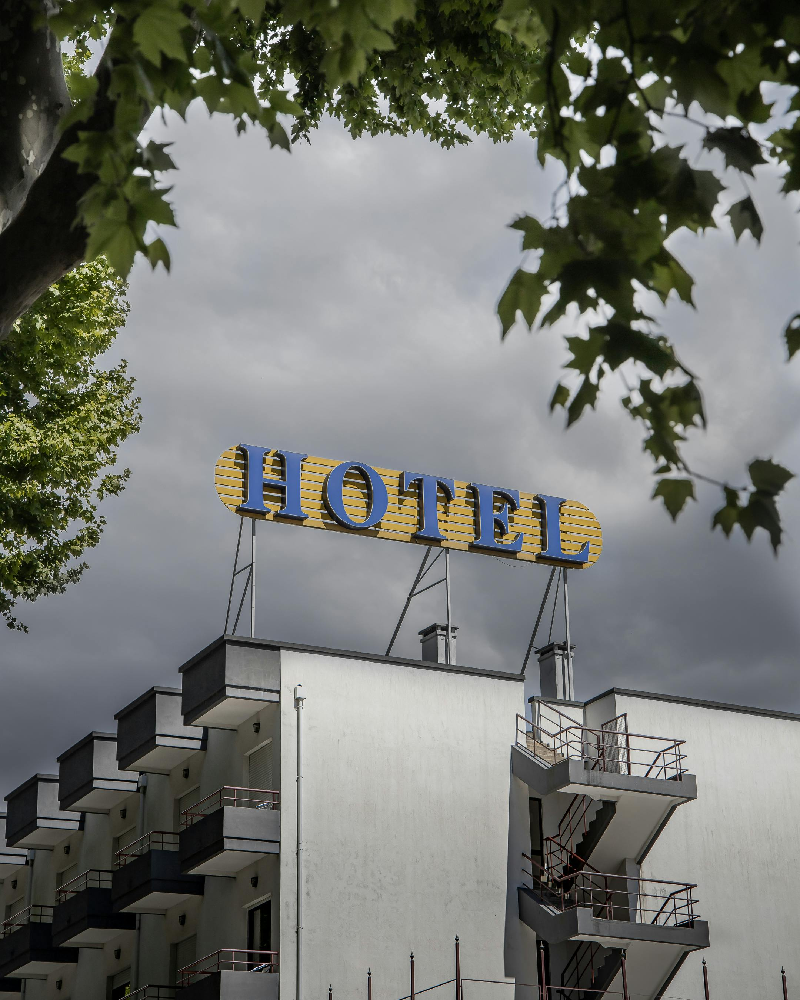

Our Maritime Heritage
The Grand Horizon was not always the towering beacon of luxury it is today. The site was originally home to the "Sterling Watchtower," built in 1922 by Captain Alistair Sterling. For decades, it served as a navigational landmark for ships entering the bay.

In 1954, the property was purchased by the Vanderbilt-Smith family, who converted the lighthouse and surrounding grounds into a boutique 12-room inn. Many of the original stone walls from the 1920s structure are still visible today in our "Heritage Bar," providing a rustic connection to the past.
The Gilded Age Renovation
The hotel underwent a massive "Gilded Age" renovation in the late 1980s, expanding from a small inn to a world-class resort. During this era, it became a frequent hideaway for Hollywood icons and international diplomats seeking privacy. A few legends still haunt our halls:
- The Blue Horizon Diamond: Rumored to have been hidden within the hotel walls during a 1992 gala; it remains unfound to this day.
- Secret Tunnels: Original blueprints suggest service tunnels connecting the Sterling Library directly to the shoreline.
- The Captain’s Ghost: Staff occasionally claim to see Captain Sterling on the East Terrace at sunrise, still watching the bay.
Preserving Our Legacy
Today, we honor this rich history by maintaining the Sterling Library, which houses over 5,000 first-edition books and artifacts from the original watchtower. We invite our guests to take a self-guided "Legacy Tour" of the property, following the brass plaques located in the hallways that detail the architectural evolution of the building.
By staying with us, you aren't just visiting a hotel; you are becoming a part of a century-old story of maritime history and hospitality excellence. We are proud of our roots and even prouder to be the stewards of this magnificent estate for the next generation of travelers.